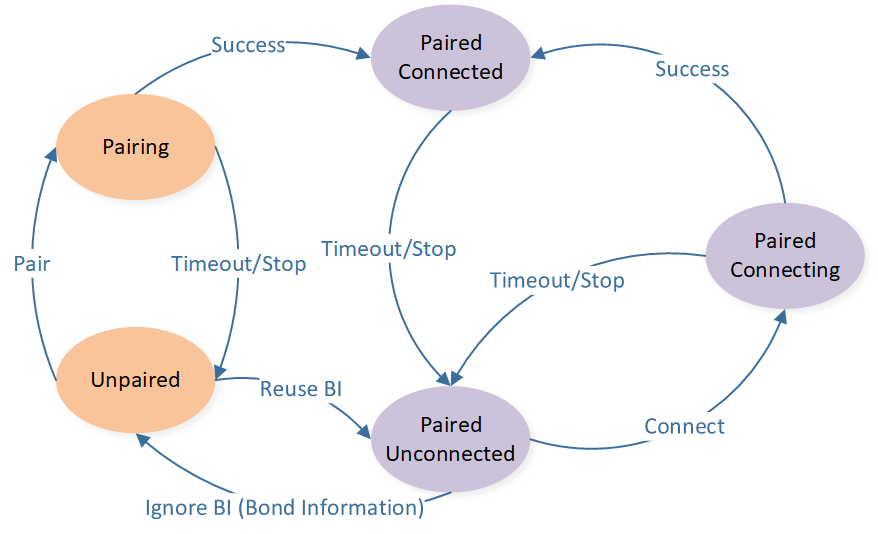
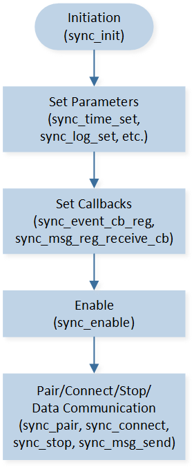

HID 私有协议用户指南
本文介绍 HID 私有协议的使用方法，包括框架、流程和函数说明等。
术语与概念
本协议是 Realtek 点对点通信的私有无线协议，通信角色 如下图所示。本文介绍该协议的使用方法，该协议的详细内容参考文档 HID 私有协议规范 。

通信角色
协议共分为 5 个状态，协议状态机 如下图所示。
初始状态是 unpaired 状态，即没有绑定信息，且没有链路。
paired unconnected 状态有绑定信息但没有链路，忽略绑定信息（Bond Information, BI），则进入 unpaired 状态，可以重新配对。重新配对成功后，会覆盖原有的绑定信息。重新配对失败后，可以重新使用原来的绑定信息，从 unpaired 状态恢复到 paired unconnected 状态。
在 pairing 状态和 paired connecting 状态，master 和 slave 的行为略有差别。master 端有超时机制，即超时未成功则自动退出。而 slave 端无超时机制，如果需要退出此状态，需要 application 手动 stop。
在 paired connected 状态，master 和 slave 进行双向数据通信。双向数据通信以 sync interval 同步间隔为周期进行周期性通信。当双方没有数据交互时，可以降低通信速度，即进入心跳状态，以 heartbeat interval 心跳间隔为周期进行周期性通信，以降低功耗。
{kind=link}

协议状态机
特性
本协议特性如下：
支持 4K 超高上报率
支持多种重传机制满足不同业务的可靠性需求
采用跳频技术提高抗干扰能力
支持配对实现快速绑定
支持空闲时自动切换低功耗模式
应用涉及协议的操作主要有初始化、参数配置、配对、连接和数据收发，及其回调，如图 协议的接口 所示。本文后续章节介绍这些操作的使用方法。

协议的接口
接口提供
协议提供的接口申明在以下文件中：
subsys\ppt\sync\inc\ppt_sync.hsubsys\ppt\sync\inc\ppt_sync_master.hsubsys\ppt\sync\inc\ppt_sync_slave.h
初始化与配置
MP Tool 配置
需要配置 BLE master link，详情请参考 MP Tool 配置。
初始化
协议运行流程如下图所示，需要首先执行初始化流程，然后才能执行 pair 和 connect 等状态机操作和数据通信。
本协议的所有 API 都以 sync_ 开头。
{kind=link}

运行流程图
初始化的具体流程如下：
调用
sync_init()，初始化协议，确认设备角色配置参数
配置回调
调用
sync_enable()，使能协议
参数和回调在后续章节介绍。
功能
本节主要介绍 HID 私有协议不同功能或者模块如何使用和配置。
参数
此部分主要介绍协议中参数的含义以及如何配置。
信道
协议使用的信道有默认值 2432、2447、2462、2477、2407、2422、2437、2452、2442、2457、2472、2413 MHz，共 12 个信道。信道分组用于 fast sync 阶段快速回连，默认分 3 组，每组 4 个信道。
用户如果有客制化需求，可以调用 sync_channel_set() 配置信道。
发射功率
如果使用动态功率控制，发射功率会在 tx_power_dbm_min 和 tx_power_dbm_max 范围内变化，在链路质量较好时，降低发射功率，反之增加发射功率。
如果不使用动态功率控制，固定发射功率为 tx_power_dbm_max。
发射功率配置，可以调用 sync_tx_power_set()。
配对 RSSI 阈值
配对时，支持用 RSSI 阈值限制配对距离。只有信号强度大于阈值时，才允许配对。
调用 sync_pair_rssi_set() 配置阈值。
绑定信息
配对时会产生绑定信息，会自动存在 FTL 空间。在连接时，application 需要取出绑定信息进行连接。application 也可以自行删除，或者覆盖绑定信息。
sync_nvm_get_bond_info() 获取绑定信息。sync_nvm_set_bond_info() 存储绑定信息。sync_nvm_clear_bond_info() 删除绑定信息。同步参数
master 设备可以配置同步间隔，以对应应用数据的上报率。当同步间隔大于协议支持的传输速度时，master 设备可以配置重传间隔，让协议在一个同步间隔内以重传间隔的速度进行重传。
调用 sync_time_set() 配置同步间隔和重传间隔。
例如：
同步间隔 1000us，重传间隔 1000us，对应了 1K 上报率，没有重传机会。
sync_time_set(SYNC_TIME_PARAM_CONNECT_INTERVAL, 1000); sync_time_set(SYNC_TIME_PARAM_CONNECT_INTERVAL_HIGH, 1000);
同步间隔 1000us，重传间隔 250us，对应了 1K 上报率，且有 3 次重传机会。
sync_time_set(SYNC_TIME_PARAM_CONNECT_INTERVAL, 1000); sync_time_set(SYNC_TIME_PARAM_CONNECT_INTERVAL_HIGH, 250);
同步间隔 250us，重传间隔 250us，对应了 4K 上报率，没有重传机会。
sync_time_set(SYNC_TIME_PARAM_CONNECT_INTERVAL, 250); sync_time_set(SYNC_TIME_PARAM_CONNECT_INTERVAL_HIGH, 250);
心跳参数
心跳有 0/1/2 共 3 档，每档都有心跳间隔和次数。档位越高，心跳间隔越大，对应更低功耗的状态。其中第 0 档是使用的同步间隔，不需要额外设置心跳间隔，第 2 档不需要额外设置心跳次数。
调用 sync_master_set_hb_param() 配置心跳各档参数。
例如关闭心跳：
sync_master_set_hb_param(0, 0, SYNC_MASTER_HB_RHY_PERIOD_MAX);
例如打开心跳，且档位 0 为 40 次，档位 1 为 10ms 乘以 200 次，档位 2 为 100ms。
sync_master_set_hb_param(0, 0, 40);
sync_master_set_hb_param(1, 10000, 200);
sync_master_set_hb_param(2, 100000, 0);
重传和缓冲
根据消息发送的重传次数，将消息分为以下 4 类：
零重传：消息不管有没有被应答，只发送一次。
有限重传：消息如果没有被应答，则重传。重传一定次数后还没有被应答，则取消重传。
无限重传：消息如果没有被应答，则一直重传，直到被应答。
动态重传：消息如果没有被应答，需要重传时，如果有其他消息要发送，则取消重传，如果没有其他消息要发送，则继续重传。
调用 sync_msg_set_finite_retrans() 设置有限重传的重传次数。
每类消息有独立的缓冲池，缓冲消息笔数可以用 sync_msg_set_quota() 一起配置，也可以用 sync_msg_set_quota_by_type() 按消息类型分别配置。
Log 开关
协议运行时的部分 log 可以被 application 打开或关闭，默认是打开的。
调用 sync_log_set() 开关 log。
回调
协议通知 application 的回调有四类：
event callback：通知配对和连接状态。
message send result callback：通知消息发送结果。
message receive callback：通知消息接收。
send prepare callback：master 通知消息发送准备，用于触发 application 采集和发送数据。
Event Callback
Event callback 的注册函数是 sync_event_cb_reg()，其中函数指针的类型为 sync_event_cb_t。
event 类型详情如下所示：
Event 类型 |
前置条件 |
上报时机 |
说明 |
|---|---|---|---|
SYNC_EVENT_PAIRED |
配对 |
配对成功时上报 |
通知配对成功 |
SYNC_EVENT_PAIR_TIMEOUT |
配对 |
配对超时 |
Master 通知配对超时 |
SYNC_EVENT_CONNECTED |
配对或者连接 |
配对成功时上报，或者连接成功时上报 |
通知连接成功 |
SYNC_EVENT_CONNECT_TIMEOUT |
连接 |
连接超时 |
Master 通知连接超时 |
SYNC_EVENT_CONNECT_LOST |
连接成功 |
链路超时 |
通知链路断开 |
Message Send Result Callback
message send result callback 是每条消息都有独立的 callback，在消息发送时 sync_msg_send() 里注册。
发送结果回调的函数指针类型为 sync_msg_send_cb_t。
Message Receive Callback
Message receive callback 的注册函数为 sync_msg_reg_receive_cb() 。
注册的函数指针类型为 sync_msg_receive_cb_t 。
Message Send Prepare Callback
Message send prepare callback 在 master tx 前触发，可以用于让 application 跟随协议 tx 节奏来采集和发送数据。
注册函数为 sync_master_reg_tx_prepare_cb()。
状态机操作
状态机的操作类型有：
pair：配对
connect：连接
stop：停止配对、连接，或者断开链路
数据收发
数据发送同章节 Message Send Result Callback。
数据接收同章节 Message Receive Callback。
DLPS
如果要支持 DLPS，需要调用协议的 DLPS 初始化 API sync_dlps_init()。它应该在 sync_init() 之后调用，且应该在 platform DLPS init ( DLPS_IORegUserDlpsEnterCb()， DLPS_IORegUserDlpsExitCb()，DLPS_IORegister() 等 API)之前调用。
常见问题
本节介绍了一些常见问题和注意事项。
协议占用资源
协议运行会占用一些资源，application 需要避开这些被占用的资源。
占用资源：
ENHANCE TIMER
支持 DLPS 时，需要在
board.h里打开宏USE_ENHTIM_DLPS。ENHANCE TIMER 的 API 不是中断安全的。application 如果也有使用 ENHANCE TIMER，则需要调用
__disable_irq和__enable_irq进行保护。例如：__disable_irq(); ENHTIM_Cmd(ENH_TIM2, ENABLE); __enable_irq();
具体占用情况如下表所示。
Timer 占用 Timer 使用情况
<=4K
8K
Master (Mouse etc.)
ENH_TIM1
ENH_TIM0 / ENH_TIM1
Slave (Dongle)
ENH_TIM1
ENH_TIM0 / ENH_TIM1 / ENH_TIM2
FTL 空间：offset 0 Byte，length 8 Bytes。
中断优先级
为了避免干扰协议运行，application 使用的外设的中断优先级应该≥3，且请尽量缩小临界区的执行时间。
示例工程
本协议有提供示例供用户参考，详见 Sync 示例。
See Also
相关 API Reference 请查看：